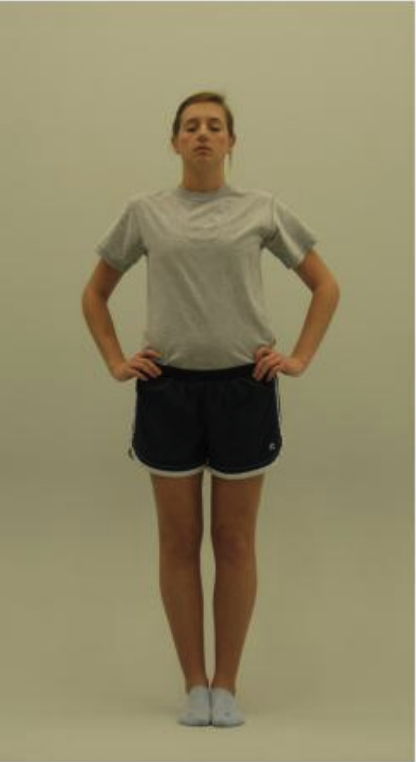
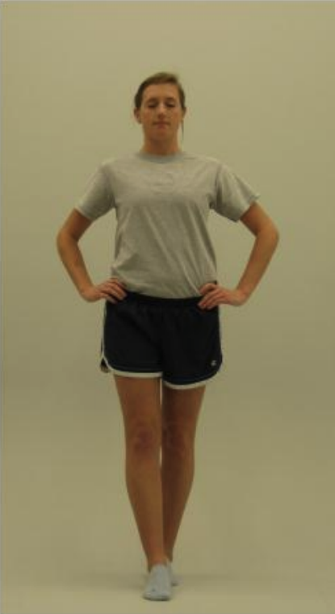
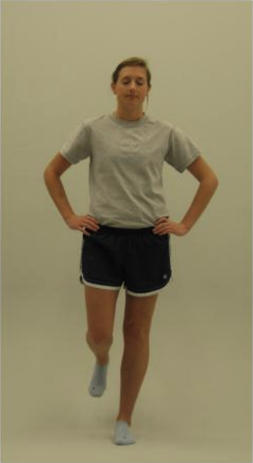
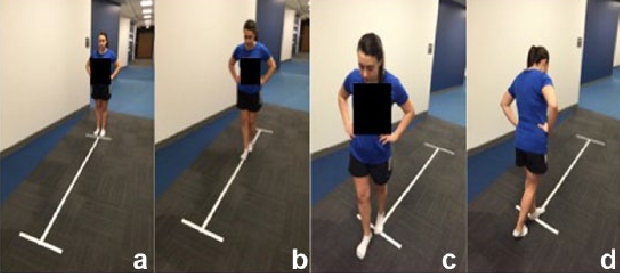
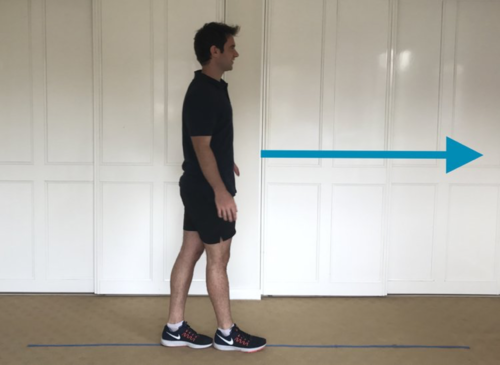

Use this web app to administer concussion assessments for your athletes. The data is stored locally in your browser unless you "Delete All". You can also sync the data with your Google Drive.
Click the round add button below to add an athlete profile. This will start a baseline assessment and create an athlete profile that you can use to compare concussion scores over time for the athlete.
Search by name:
Red Flags
Red flags are signs and symptoms that may indicate a more serious injury. If any of these are present, the athlete should be referred to a healthcare professional immediately.
Neck pain or tenderness
Seizure or convulsion
Double vision
Loss of consciousness
Weakness or tingling/burning in more than 1 arm or in the legs
Deteriorating conscious state
Vomiting
Severe or increasing headache
Increasingly restless, agitated or combative
Visible deformity of the skull
Observable Signs
Glasgow Coma Scale
Best Eye Response
Best Verbal Response
Does the athlete know their name, where they are at, the day/year, etc?
Best Motor Response
Can the athlete follow instructions for how to move (e.g. "lift your arm") or respond to pain (pinch or poke)?
Cervical Spine
In a patient who is not lucid or fully conscious, a cervical spine injury should be assumed and spinal precautions taken.
Coordination and Ocular/Motor Screen
Maddocks Score
Examiner, read the following line and ask the following questions (modified to be appropriate to the relevant sport). Check the correctly answered questions.
Athlete, you will be asked a few questions. Please listen carefully and give your best effort. First explain what happened?
Symptom Evaluation Baseline
Examiner, please hand the device to the athlete to fill in the symptom scale (below) after you provide instructions.
Athlete, please rate your symptoms below based on how you typically feel with 1 representing a very mild symptom and 6 representing a severe symptom. 0 means the symptom is not present
Symptom Evaluation
Examiner, please hand the device to the athlete to fill in the symptom scale (below) after you provide instructions.
Athlete, please rate your symptoms below based on how you feel now with 1 representing a very mild symptom and 6 representing a severe symptom. 0 means the symptom is not present
Orientation
Examiner, ask the athlete the following questions and select the ones they answer correctly.
Orientation
Examiner, you will read the list of words below 3 times, keeping track of how many words the athlete remembers after each reading. Start the first trial by saying the following:
Athlete, I am going to test your memory. I will read you a list of words and when I am done, repeat back as many words as you can remember, in any order
Examiner, for the second and third trials say the following:
Athlete, I am going to repeat the same list. Repeat back as many words as you can remember in any order, even if you said the word before in a previous trial
Trial 1
Trial 2
Trial 3
Concentration
Digits Backwards
Examiner, read the following numbers (one sequence from each set) and ask the athlete to repeat them back in reverse order. Say them slowly at a rate of one digit per second. Each set has two number sequences. If the athlete fails the first, try the second. If both fail, end this subsection and move on to the months in reverse order.
Athlete, I'm going to read a string of numbers and when I am done, you repeat them back to me in reverse order of how I read them to you. For example, if I say 7 1 9, you would say 9 1 7. So, if I said 9 6 8 you would say?
4-9-3 or 6-2-9
3-8-1-4 or 3-2-7-9
6-2-9-7-1 or 1-5-2-8-6
7-1-8-4-6-2 or 5-3-9-1-4-8
Months in Reverse Order
Athlete, tell me the months of the year in reverse order as QUICKLY and as accurately as possible. Start with the last month and go backward. So, you'll say December, November... go ahead
December
November
October
September
August
July
June
May
April
March
February
January
Balance Error Scoring System
The athlete will be guided through 3 poses (double leg, tandem, and single leg stance) to be held for 20 seconds each. The later foam pad test is optional, only a solid floor/ground surface is required. You'll need a spotter to keep an eye on the athlete and be ready to assist them if they become unstable and begin to fall.
The athlete should take their shoes off, roll up pant legs above ankles (if applicable), and remove any ankle taping (if applicable).
Your job as examiner is to keep the camera as still as possible (minor shakes are fine) with the athlete fully in frame at all times. In case the automated system misses something, keep a count of the following errors in the athlete's execution of the poses:
Opening eyes
Lifting hands off iliac crests (upper border of the pelvis/hip-bone)
Stepping, stumbling, or falling
Abduction or flexion of the hip beyond 30 degrees (moving hips forwards/backwards/sideways)
Twisting of the shoulder beyond 30 degrees
Remaining out of the testing position for more than 5 seconds
Lifting forefoot or heel
Multiple simultaneous errors count as one. Failure to hold the pose for at least 5 seconds counts as the maximum number of errors for that pose (10).
Getting camera permissions...
Balance Error Scoring System
Examiner, you will guide the athlete through 3 poses (double leg, tandem, and single leg stance) to be held for 20 seconds each. The later foam pad test is optional, only a solid floor/ground surface is required. You'll need a spotter to keep an eye on the athlete and be ready to assist them if they become unstable and begin to fall.
The athlete should take their shoes off, roll up pant legs above ankles (if applicable), and remove any ankle taping (if applicable).
Keep a count of the following errors in the athlete's execution of the poses:
Opening eyes
Lifting hands off iliac crests (upper border of the pelvis/hip-bone)
Stepping, stumbling, or falling
Abduction or flexion of the hip beyond 30 degrees (moving hips forwards/backwards/sideways)
Twisting of the shoulder beyond 30 degrees
Remaining out of the testing position for more than 5 seconds
Lifting forefoot or heel
Multiple simultaneous errors count as one. Failure to hold the pose for at least 5 seconds counts as the maximum number of errors for that pose (10).
Double Leg Stance
Athlete, stand with your feet together, hands on your hips, and eyes closed. Hold this position for 20 seconds. Examiner, keep a count of the errors listed above.

Tandem Stance
Athlete, stand with your feet in a heel-to-toe position, hands on your hips, and eyes closed. Hold this position for 20 seconds. Examiner, keep a count of the errors listed above.

Single Leg Stance
Athlete, stand on one leg, hands on your hips, and eyes closed. Hold this position for 20 seconds. Examiner, keep a count of the errors listed above.

Double Leg Stance on Foam (optional)
Athlete, stand with your feet together, hands on your hips, and eyes closed. Hold this position for 20 seconds. Examiner, keep a count of the errors listed above.
Tandem Stance on Foam (optional)
Athlete, stand with your feet in a heel-to-toe position, hands on your hips, and eyes closed. Hold this position for 20 seconds. Examiner, keep a count of the errors listed above.
Single Leg Stance on Foam (optional)
Athlete, stand on one leg, hands on your hips, and eyes closed. Hold this position for 20 seconds. Examiner, keep a count of the errors listed above.
Timed Tandem Gait
Examiner, please place a 3-meter-long line on the floor/firm surface with athletic tape. You will instruct the athlete and start/stop the timer for 3 trials.

Athlete, when the timer is started, please walk heel-to-toe quickly to the end of the tape, turn around and come back as fast as you can, without separating your feet or stepping off the line

Trial 1 (seconds)
Trial 2 (seconds)
Trial 3 (seconds)
Average (seconds)
Fastest (seconds)
---
---
---
---
Healthy athletes typically have a fastest time between 13.9 and 15.8. Newly concussed athletes are typically between 21.9 and 26.1. Athletes concussed within the last 6-73 days will be somewhere in between.
Dual Task Gait (Optional)
Examiner, please keep the 3-meter-long athletic tape line from the Timed Gait on the floor/firm surface. You will follow the script below, click start/end timer, and click on the responses that the athlete correctly says in order. Redo trials where the athlete strays off the line.
Athlete, while you are walking heel-to-toe, you will count backwards out loud by sevens. For example, if we started at 100, you would say 100, 93, 86, 79. Let's practice counting. Starting with 93, count backward by sevens until the examiner says stop
Task
Correct Responses
Errors
Time (seconds)
Practice
9386797265585144
Good, now you will walk heel-to-toe and count backwards out loud at the same time. Keep counting until you finish walking the 3 meters, turning 180 degrees, walking the 3 meters again and the examiner says stop indicating you got to the last number. Are you ready? The number to start with is 88. Go!
Task
Correct Responses
Errors
Time (seconds)
Trial 1
888174676053463932251811
Trial 2
908376696255484134272013
Trial 3
989184777063564942352821
Healthy athletes typically complete the task in 18.7-22.5 seconds with 85.8-92.4% accuracy (0.9-1.7 errors). Concussed athletes typically take 30.6-36.1 seconds with 76.4-83.6% accuracy (2.0-2.8 errors).